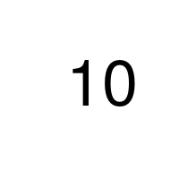

Analytics Programming
Table of Contents
- TODO Attach Unit Information ATTACH
- All Tutorials
- DONE (5) Flow Control wk5
- TODO (6) Functions wk6
- TODO (7) Generating Data wk7
- TODO (8) Break wk8
- TODO (Wk9) Break
- TODO (9) Input/Output wk10
- TODO (10) Graphics wk11
- TODO (11) Using Data Vis to Analyse 2 wk12
- TODO (12) Using RMarkDown wk13
- TODO (13) Interfacing With Other Languages wk14
- Assignment
TODO Attach Unit Information ATTACH
All Tutorials
DONE (5) Flow Control wk5
Lecture
Tutorial
Game of Life
TODO Attach Scripts and RMD
TODO (6) Functions wk6
Lecture
Tutorial
TODO Random Walk Tutorial
TODO (7) Generating Data wk7
Lecture
Tutorial
TODO (8) Break wk8
Lecture
Tutorial
TODO (Wk9) Break
Lecture
Tutorial
TODO (9) Input/Output wk10
Lecture
Tutorial
TODO (10) Graphics wk11
Lecture
Tutorial
TODO (11) Using Data Vis to Analyse 2 wk12
Lecture
Tutorial
TODO (12) Using RMarkDown wk13
Lecture
Tutorial
TODO (13) Interfacing With Other Languages wk14
Lecture
Tutorial
Assignment
Making Gif Animations from R
TODO Create a self-contained HTML from RMD
I have a self-contained ready to HTML here:
- How to make Gifs in R Using Image Magick
In Ordinary R
- Number sequence
# Example 1 # dir.create("examples") # setwd("./Attachments/Statistics/Gifs") # example 1: simple animated countdown from 10 to "GO!". png(file="example%02d.png", width=200, height=200) for (i in c(10:1, "G0!")){ plot.new() text(.5, .5, i, cex = 6) } dev.off() # convert the .png files to one .gif file using ImageMagick. # The system() function executes the command as if it was done # in the terminal. the -delay flag sets the time between showing # the frames, i.e. the speed of the animation. system("convert -delay 80 *.png example_1.gif") # to not leave the directory with the single jpeg files # I remove them. file.remove(list.files(pattern=".png")) print("Refer to ./example_1.gif")
null device 1 [1] TRUE TRUE TRUE TRUE TRUE TRUE TRUE TRUE TRUE TRUE TRUE TRUE TRUE TRUE TRUE [16] TRUE TRUE TRUE TRUE [1] "Refer to ./example_1.gif"
Figure 1: Gif Generated by Preceeding R Code
- Creating a Rotating Plot
library(lattice) b0 <- 10 b1 <- .5 b2 <- .3 g <- expand.grid(x = 1:20, y = 1:20) g$z <- b0 + b1*g$x + b2*g$y wireframe(z ~ x * y, data = g) # to rotate the plot wireframe(z ~ x * y, data = g, screen = list(z = 10, x = -60)) # example 2 png(file="example%03d.png", width=300, height=300) for (i in seq(0, 350 , 10)){ print(wireframe(z ~ x * y, data = g, screen = list(z = i, x = -60))) } dev.off() # convert pngs to one gif using ImageMagick system("convert -delay 40 *.png example_2.gif") # cleaning up file.remove(list.files(pattern=".png")) print("Refer to ./example_2.gif")
Figure 2: Gif Generated by Preceeding R Code
Using RMarkdown to Create Gifs
The following code will create a HTML via RMarkdown that will work for an
knitted html-document but not a html-notebook:
--- title: "Creating Gifs in R Using Image Magick" output: html_document: keep_md: yes toc: yes --- ### using RMarkdown ```{r chunk-label, fig.show='animate', ffmpeg.format='gif', dev='jpeg'} pacman::p_load(rmarkdown) for (i in 1:10) plot(runif(100), ylim = c(0, 1)) # for example ```